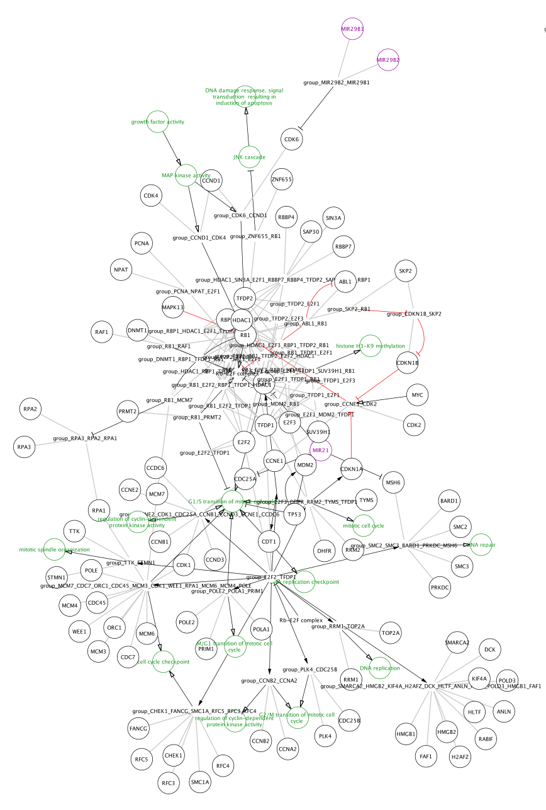
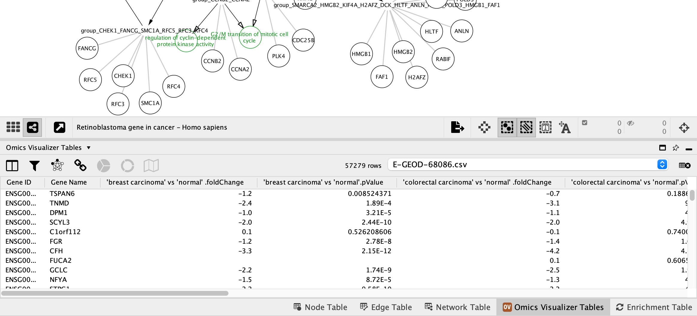
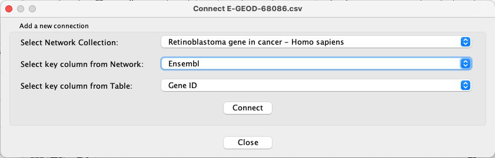
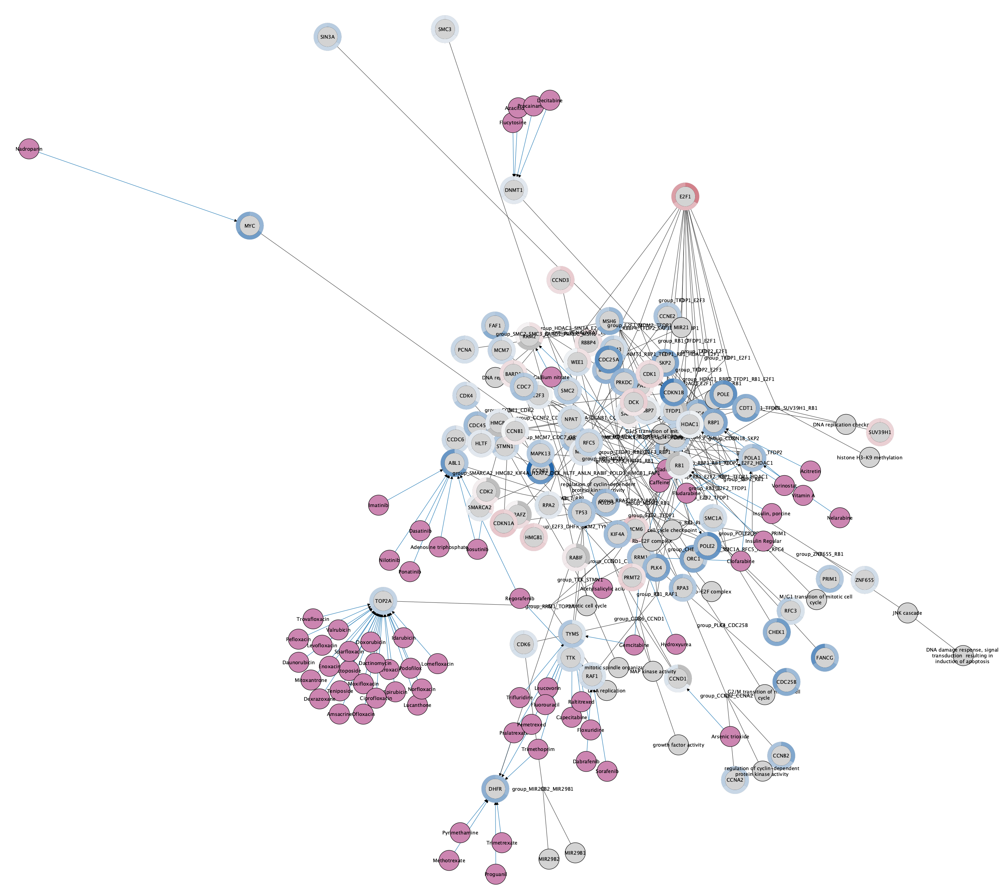

WikiPathways App
WikiPathways is a database of biological pathways maintained by and for the scientific community. Each pathway model in the database is annotated with database identfiers, which can be used for computation and data visualization. The WikiPathways App for Cytoscape is available from the App Store.
This tutorial consists of three workflows:
- Basic workflow describing pathway import and data visualization and creating a legend.
- Advanced workflow describing how to visualize multiple data points on a set of pathways of interest.
- Network visualization workflow describing pathway import, extension and data visualization on network-style pathways.

Setup
- Install and launch the latest version of Cytoscape.
- Install the WikiPathways and Legend Creator apps via
Apps → App Store → Show App Store .
Basic Workflow: Importing Pathways
- Launch Cytoscape, and in the
Network Search Tool at the top of theNetwork tab in theControl Panel , selectWikiPathways in the drop-down. Type in "cell cycle" (with quotes) and click the search icon. - A list of results for all available species will open. To see results from a select species, click the
Only checkbox and select a species from the drop-down (example: Homo sapiens). - Select the human Cell Cycle pathway (WP179) and click
Import as Pathway , or simply double-click the pathway in the list.

Importing Pathways
The pathway opens in Cytoscape with the original pathway layout and the WikiPathways style.
Pro-tip: if the labels are not depicted in the visualization, click on the diamond shaped button below the visualization to enable showing names. This step is depicted in the figure below in the red square.

Pathway Node Identifiers
Nodes in pathways from WikiPathways are annotated with identifiers from public databases, visible in the

Data Import
The data we will be using for this workflow (E-GEOD-68086.csv) is from a study investigating the RNA-seq signatures of platelets from patients with various types of cancer, in an effort to develop a platelet-based diagnostic (Best et el., 2015). The data was downloaded from Expression Atlas.
- Load the E-GEOD-68086.csv file under
File menu, selectImport → Table from File.... ; select the file you want to import in the menu, and click onOpen . Alternatively, drag and drop the data file directly onto theNode Table . - Under
Where to Import Table Data , selectTo a Network Collection and select the relevant network collection in the second drop-down; if you only have one network opened in Cytoscape, this network is selected automatically. - In the
Key Column for Network drop-down, select the new Ensembl column. - In the
Preview table, note that the Gene ID column is already selected as the key. - The next slide in this presentation shows an example of the data import interface.
Data Import
The data import interface should now look like this:

- Click
OK to import. - Once import is complete, look for the newly imported data columns in the
Node Table to confirm that it worked.

Data Visualization: Node Fill Color
We now have the data in Cytoscape, linked to the pathway, and ready to map to visual properties of the nodes in the network. For this workflow, we will choose data from one of the cancer types, "breast carcinoma", and visualize the fold change as Node Fill Color.
- At the top of the
Style tab (left-hand side panel), click on theOptions button and chooseCopy Style... . Select an appropriate name, for example "Basic Data Visualization". - Still in the
Style interface, for theFill Color visualization option, select the middle column (Map. box). - In the
Column drop-down, select 'breast carcinoma' vs 'normal' .foldChange. - In the
Mapping Type drop-down, selectContinuous Mapping . This will create a default color gradient from blue (negative fold change) to red (positive fold change):

Data Visualization: Node Border Width
We also have a significance measure for the fold change, which we can add to our visualization. For this, we will use both
- Click on the
Map. cell for theNode Border Width property in theStyle panel. - In the
Column drop-down, select 'breast carcinoma' vs 'normal' .pValue. - In the
Mapping Type drop-down, selectContinuous Mapping . - Double-click on the gradient, which defines the node border width over the range of p values.
- First, we will define the min/max of the range of p values we are interested in, that is p values less than or equal to 0.05. Click on
Set Min and Max... and set the max to 0.05. ClickOK to save. - Click on the handle for the max value (black triangle on the right-most end of the gradient) and set the value to 5 in the
Node Border Width field. Repeat with the handle for the min value. ClickOK to update the mapping. - Click the
Def. value forNode Border Paint and select a dark grey color.

Data Visualization: Node Border Color
- Click on the
Map. cell forNode Border Paint in theStyle panel. - In the
Column drop-down, select 'breast carcinoma' vs 'normal' .pValue. - In the
Mapping Type drop-down, selectContinuous Mapping . - Double-click on the gradient.
- Similar to the last step, we will define the min/max of the range of p values we are interested in, that is anything under 0.05. Click on
Set Min and Max... and set the max to 0.05. ClickOK to save. - Click on the large triangle handle at the right-most end of the gradient. This defines the border color for nodes with p value > 0.05, meaning not significant, so let's set it to dark grey.
- Next, set all the other handles to the same color, preferably a bright color that is not part of the node fill gradient, for example bright pink. We can delete the middle handle since we want the same color for anything under 0.05, simply select it and click
Delete .

Data Visualization
We now have our example data visualized on the pathway, with fold change represented as a gradient node fill color and significance as node border color/width.

Adding a Legend
To add a legend to your pathway visualizations, you can use the Legend Creator App.
- In the
Network Panel select the network you want to add a legend to. For this example, let's use the Cell Cycle pathway with the original pathway layout. - In the
Control Panel , selectLegend Panel either from the drop-down at the top, or by clicking on its tab. - The
Legend Panel will have some visual properties selected by default. Make sure they are the ones you want to include in the legend. For this example we will unselect all except Node Fill Color. - Select a
Title for the legend, for example "Breast carcinoma vs normal". For this example, theSubtitle is left blank. - Click
Refresh Legend to add the legend to your network.
Adding a Legend
Our final visualization now includes a legend. In this case, the legend graphic was resized from the default. This can be done by first clicking  at the bottom of the
at the bottom of the

Saving and Exporting Data Visualization
Cytoscape provides a number of ways to save results and visualizations:
- As a session:
File → Save Session ,File → Save Session As... - As an image:
File → Export → Network to Image... , selecting for example pdf or png from theExport File Format drop-down. - To a public repository:
File → Export → Network to NDEx
Advanced Workflow: Importing Multiple Pathways
This workflow describes how to work with multiple WikiPathways pathways in Cytoscape, and how to visualize more than one data point. This analysis assumes that we already have a list of pathways of interest. This list could come from enrichment analysis, but could also be a list of pathways of interest from prior knowledge.
The data we will be using for this workflow (E-GEOD-68086.csv) is from a study investigating the RNA-seq signatures of platelets from patients with various types of cancer, in an effort to develop a platelet-based diagnostic (Best et el., 2015). The data was downloaded from Expression Atlas.
- If you are continuing from the previous workflow, make sure the session is saved and then select
File → Close Session to start from scratch. - Using the the
Network Search Tool withWikiPathways selected, search for and open the following human pathways, with theImport as Pathway option. Pro-tip: You can search for the WPID instead of the title.- WP179: Cell cycle
- WP2446: Retinoblastoma gene in cancer
- WP4830: GDNF/RET signaling axis
- WP707: DNA damage response
The 4 pathways will be listed as separate network collections in the

Data Import
Now that we have our pathways of interest open, we can load the data. Cytoscape allows you to import data either to a specific network, collection of networks, or a set of networks. We will use the latter, to avoid having to load the data multiple times.
- Load the E-GEOD-68086.csv file under
File menu, selectImport → Table from File.... . - Under
Where to Import Table Data , selectTo selected networks only and click the Select All button to select all of the networks in the Network List. - For the
Import Data as: option, select Node Table Columns (default). - In the
Key Column for Network drop-down, select the Ensembl column. - In the
Preview table, note that the Gene ID column is already selected as the key.
Data Import
Each network should now have multiple extra columns corresponding to fold change and p-value for several cancer types:

Data Visualization
To visualize the data on the pathways, we are going to use Cytoscape's built-in function for Custom Graphics to visualize the fold change values for three cancer types: breast carcinoma, pancreatic adenocarcinoma and colorectal carcinoma. For this particular workflow, the visualized data points should be of the same type, for example fold changes.
- At the top of the
Style tab (left-hand side panel), click on theOptions button and chooseCopy Style... . Select an appropriate name, for example "Advanced Workflow". - Still in the
Style interface, click on theDef. column ofImage/Chart 1 . - Under
Charts selectHeatmap option (third icon from the left). Select the columns you want to visualize; 'breast carcinoma' vs 'normal'.foldChange, 'pancreatic adenocarcinoma' vs 'normal'.foldChange and 'colorectal carcinoma' vs 'normal'.foldChange. Remove any other columns selected by default. - Under
Customize , selectHorizontal Orientation . - Under
Color Palette select HSV Red-Blue (left-most). - Click the
Not Available icon in the color palette and change its color from dark grey to white.
in the color palette and change its color from dark grey to white. - Click
Apply .
Data Visualization
The three data points are now visualized as vertical stripes, each with a gradient from blue-red for fold change. Note that for this particular graphic (heatmap with horizontal orientation), the data points are displayed in the opposite order from how they were listed in the Custom Graphics interface, so in this case from left to right it is showing pancreatic adenocarcinoma vs normal, colorectal carcinoma vs normal and breast carcinoma vs normal.

Data Visualization
To apply the same visualization to the remaining pathways, simply select each one of the pathways in the


Saving and Exporting Data Visualization
Cytoscape provides a number of ways to save results and visualizations:
- As a session:
File → Save Session ,File → Save Session As... - As an image:
File → Export → Network to Image... , selecting for example pdf or png from theExport File Format drop-down. - To a public repository:
File → Export → Network to NDEx
Network Workflow
In addition to importing pathway models with the original layout and visual style of the WikiPathways model, the WikiPathways App also allows import of any pathway as a network. In this workflow, we will import one of the pathways as a network, perform data visualization using the Omics Visualizer app, and extend the network with drug interactions using the CyTargetLinker app.
- Install the Omics Visualizer and CyTargetLinker apps via
Apps → App Store → Show App Store . - Download CyTargetLinker Link Sets. For this workflow, we will use DrugBank drug-target interactions.
- The link set will be downloaded as a compressed file. Unzip it and place it in new folder in your main user directory.
Importing Pathways as Networks
We will import one of the pathways from the previous workflow as a network:
- If you are continuing from the previous workflow, make sure the session is saved and then select
File → Close Session to start from scratch. - Using the
Network Search Tool withWikiPathways selected, search for "retinoblastoma" or "WP2446" and open the pathway using theImport as Network option.
Importing Pathways as Networks
Note that the pathways now appear with the default Cytoscape layout applied, and nodes have a default round shape. Some graphical aspects of the pathway model are retained, such as node border and node label colors, and edge line types.
Extend the Network
Next, we will use the CyTargetLinker app to extend the network with drug-target interactions.
- Go to
Apps → CyTargetLinker → Extend network . - Under
Select User Network choose the network you just imported. - Under
Select your network attribute choose Ensembl. - Click the
Browse button and find the directory where your link sets are stored. Select the directory (not the individual files). - Keep the default setting as BOTH for
Select direction . - Click
Ok to continue.
Extend the Network
A set of nodes and interactions will be added to the network, representing drugs with interactions to the existing nodes in the network. The style of the network is automatically updated to the CyTargetLinker default style, which uses purple for the drug nodes and blue for the drug-target interaction. The node label is mapped to CTL node label, so our original network nodes will have no label. We can update this so that all nodes have labels:
- In the
Style panel, expand theNode Label mapping to see the details. - Click in the
Column field and update the mapping from CTL.Type to name.
Data Import
Next, we can add a data visualization to the nodes using the the Omics Visualizer app. We will use the same data as in the previous workflows.
- Go to
Apps → Omics Visualizer → Import data from file and select the E-GEOD-68086.csv. - A new tab titled
Omics Visualizer Tables will be avaiable in theTable Panel .

Data Import
Next, we need to establish the mapping between the new table and the network.
- Go to
Apps → Omics Visualizer → Manage table connections . - For
Select Network Collection , choose Retinoblastoma gene in cancer - Homo sapiens. - For
Select key column from Network , choose Ensembl. - For
Select key column from Table , choose Gene ID.

Visualizing Data Using Charts
We now have the data mapped and we are ready to add charts based on the example data. We will visualize the same three data points as in the previous workflow.
- Go to
Apps → Omics Visualizer → Create donut visualization . - Under
Values select the first data point, 'breast carcinoma' vs 'normal'.foldChange. - Click the plus sign and add 'pancreatic adenocarcinoma' vs 'normal'.foldChange, and repeat for 'colorectal carcinoma' vs 'normal'.foldChange.
- In the
Mapping Type drop-down, selectContinuous Mapping . - Leave
Mapping as Continuous, andLabels as --- NONE ---. ClickNext > to proceed. - Leave the defaults as-is, except for the
Ring is , which should be set to row. ClickDraw to continue.
The network now has a donut chart around each node, representing the three data points:
Saving and Exporting Data Visualization
Cytoscape provides a number of ways to save results and visualizations:
- As a session:
File → Save Session ,File → Save Session As... - As an image:
File → Export → Network to Image... , selecting for example pdf or png from theExport File Format drop-down. - To a public repository:
File → Export → Network to NDEx